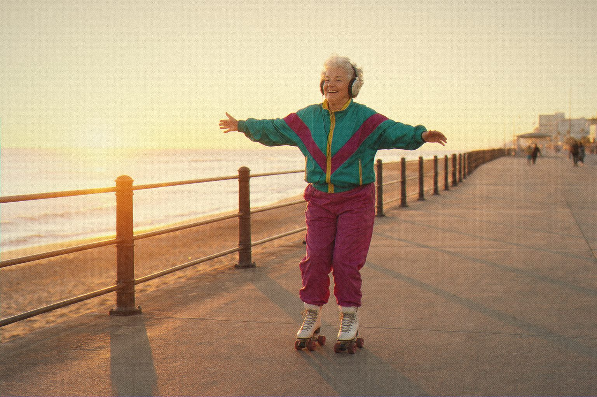

Born in 1984. Still out every night.

Some instruments age. This one just collects more records. The Juno-106 has played the pads, basses and late-night arpeggios of four decades and shows no sign of going home early.
Youth106 recreates it with one oscillator, one beautiful filter and the chorus that made the whole thing glow.
It's simple enough to learn in an afternoon and good enough to keep for the rest of your life. Press Chorus II. Everybody does.

Chorus II pressed, obviously.
Youth106
Polyphonic synthesizer after the Roland Juno-106.
Open source · AU · VST3 · CLAP
Jardim SonoroOpen-source audio research
Download: jardimsonoro.com/audioSource & issues: github.com/nagualcode/youth106
Synthesizers04